Imp Doom
A first-person imp shooter for the Timex Sinclair 2068: a ray-casting 3D view, a pistol, six imps, a key and a locked door on every level. Three versions, and all three play right here on this page.
Nothing to install: the cartridges run on an emulated 1983 home computer in this page. A fan-made game, emulator-tested only; it has not been tried on a real TS2068. Not affiliated with id Software or Bethesda.

Getting started
From this page to your first imp in a minute. Every picture in this section was captured from the running page in a browser.
Pick a game and press Play
The player is right here. Choose Imp Doom, Imp Doom II or Imp Doom III on the tabs and press Press to play. The page loads that cartridge into an emulated TS2068 and starts it; choosing another tab stops the first game and loads the next into the same machine. Not sure which to pick? The comparison below says what is different; Imp Doom III is the newest and final one.
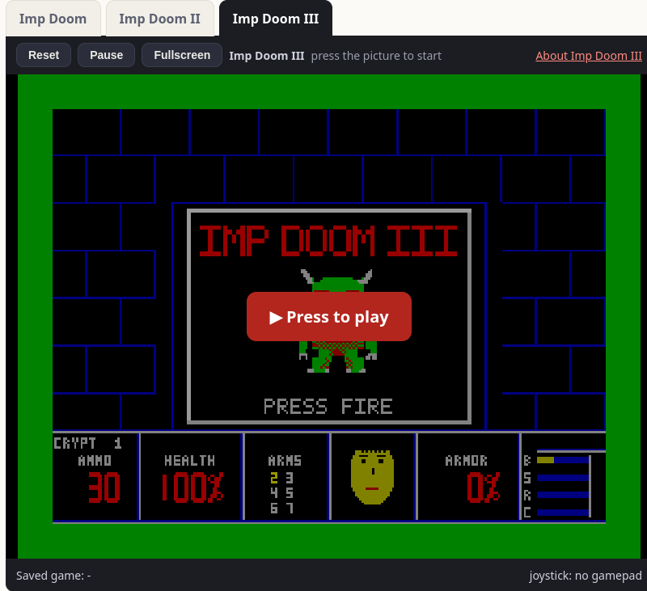
You need a computer keyboard (there are no touch controls) and a browser with WebGL 2, which the emulator draws with. The player pauses itself while it is scrolled out of view. You can link straight to a game: index.html#play=1, #play=2 or #play=3 (also ?game=N) select that tab and start it; play.html?game=N is the same player on a page of its own.
Click the screen so it gets the keyboard
Click once on the screen. From then on your keys go to the TS2068, and the sound starts too if your browser was holding it back. The frame around the screen turns red when it has the keyboard. If you click somewhere else on the page, click the screen again.
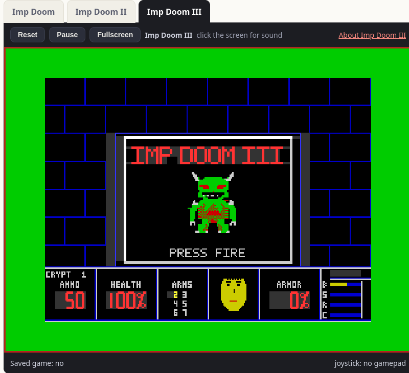
Press SPACE on the title
Every game opens on its title screen (the imp, the name and PRESS FIRE). Press SPACE (or ENTER) to start; SPACE is the fire button, so it also starts, restarts and continues from every title, death and win screen. The three titles are easy to tell apart: black border for Imp Doom, blue for II, green for III.


Move, turn, shoot
Each level is a maze seen from the inside. The pistol shoots straight ahead: line an imp up with the middle of the picture and press fire. Kill all six imps to clear the level. The status bar shows the level name, ammo, health and, once you have it, the key. Walk onto health packs and ammo boxes to pick them up.
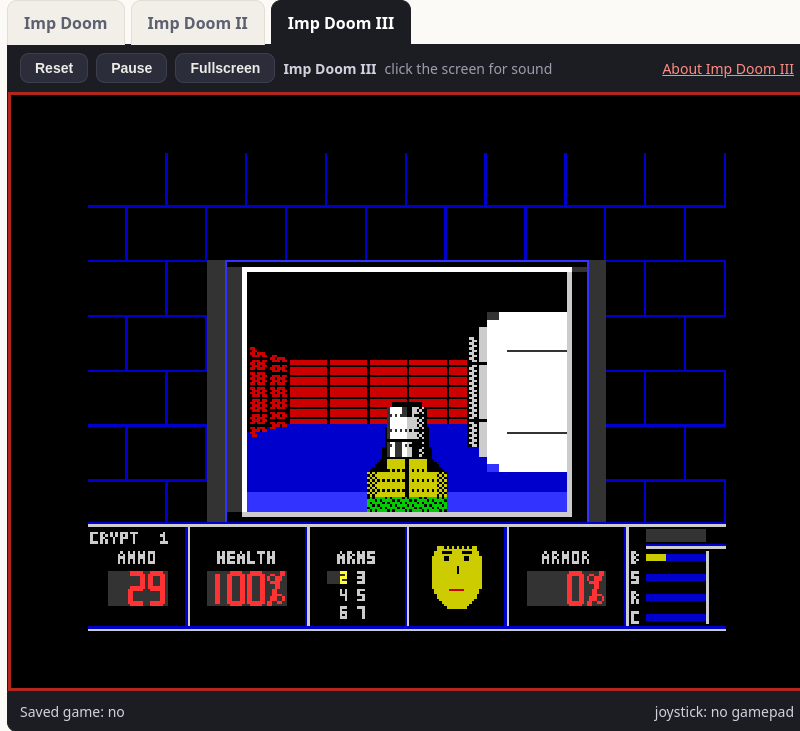
| Action | Keys | Gamepad |
|---|---|---|
| Forward / back | Q / A, or cursor up / down | up / down |
| Turn left / right | O / P, or cursor left / right | left / right |
| Strafe left / right | Z / X | - |
| Fire | SPACE | fire button |
| Use (open the locked door, once you have the key) | E or ENTER | - |
| Start, restart, continue (title, death and win screens) | SPACE or ENTER | fire button |
| Save the game (Imp Doom III only) | K (while playing) | - |
| Load the saved game (Imp Doom III only) | L (while playing, and on the title and the death and win screens) | - |
Keys can be combined (walk and turn, strafe and fire). A connected gamepad is read as joystick 1. Keys are read only while the screen has the keyboard.
Find the key and use the door
Every level has a key and a locked door; some of the imps wait behind that door. Walk onto the key to take it: the border flashes cyan and a key shows in the status bar. Then walk up to the door and press E or ENTER: the border flashes green and the door opens. When an imp hits you the border flashes red: turn round, it may be behind you.
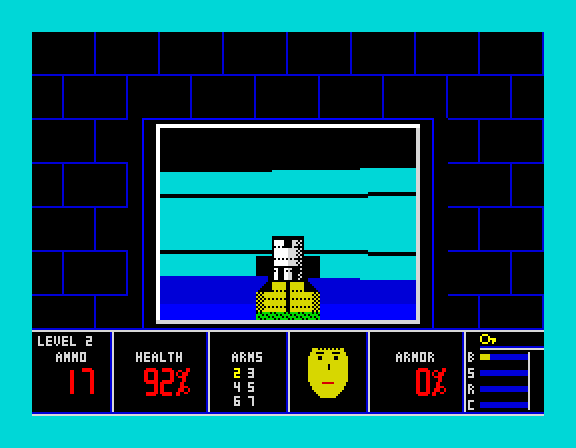
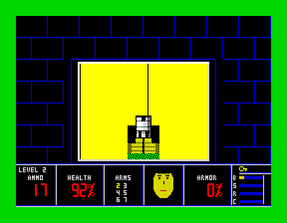
If you die, fire restarts the level you died in. When all imps are dead a banner tells you so (LEVEL CLEAR, AREA CLEAR or IMPS SLAIN, depending on the game) and fire carries on.
Save and load (Imp Doom III only)
In Imp Doom III, K saves the game you are in and L loads it (also from the title and the banners, even after you reload the page). The border flashes white when saved, yellow when loaded and magenta when it failed (for example, no saved game yet); a dead game cannot be saved. The save is kept in this browser’s local storage (key impdoom:DOOM1.SAV), on this device only: the line under the screen says Saved game: yes or no, and Delete save removes it. Clearing the site’s data deletes it too. Imp Doom and Imp Doom II have no save key.
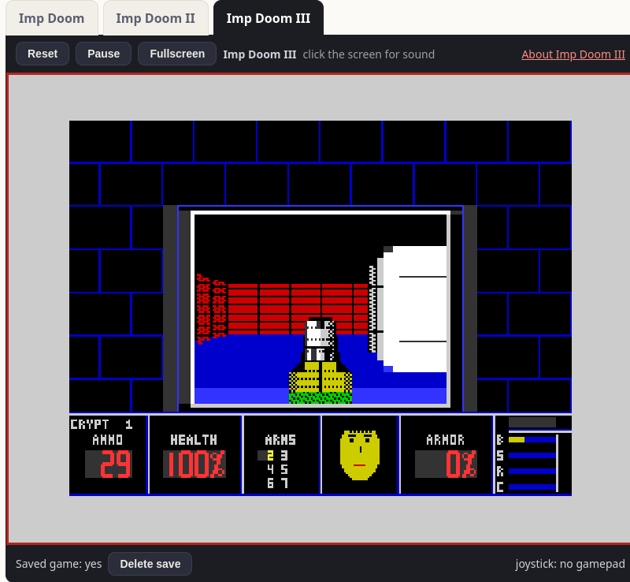
What is different
The same engine, the same imp, the same controls and the same key-and-door levels in all three; what changes is where the levels come from and a handful of looks and rules. Everything below is taken from the project’s own result notes.
How each one plays

Imp Doom (I)
You learn it. Four hand-built levels, always the same: the imps, health packs, ammo boxes and the key are in the same places every time, so a second run is a rehearsal. Each level starts at 100% health. Clear level 4 and the banner says YOU WIN. This build is frozen, exactly as it was.
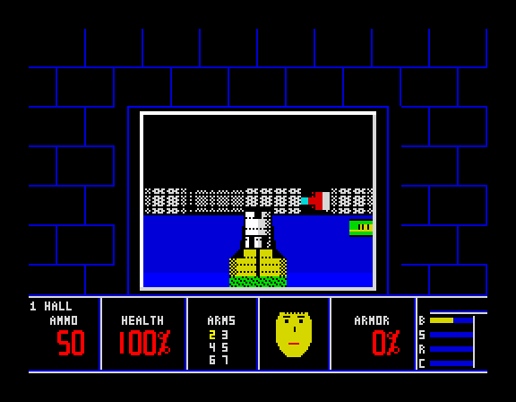
Imp Doom II
The maps you know, with surprises. The same four levels, walls, door and key chamber, but where the six imps stand and where the key, health and ammo lie is picked from stored alternatives by a seed taken when you press fire on the title. Dying replays the same layout; a new game draws a new seed. Ammo boxes give 15 instead of 10, the levels have names, and the last banner reads IMPS SLAIN. On average the remixed levels 3 and 4 came out a little easier than the hand-built ones in the project’s bot tests.
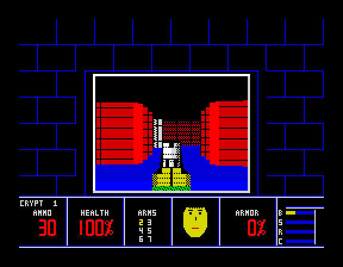
Imp Doom III
Every level is new, and you can stop and come back. A generator builds a fresh layout for every level, up to level 99, and the imps are green. The first four levels step up in difficulty (the least ammo you can start a level with falls from 30 to 14 bullets), and from level 4 on it stays at that setting. Later levels start with the health you carried over or 50%, whichever is more. K saves, L loads. The tune is darker. This is the final build.
Side by side
| Imp Doom | Imp Doom II | Imp Doom III | |
|---|---|---|---|
| Levels | 4 | 4 (the same four) | 1 to 99, one after another; the counter stops at 99 |
| Hand-built or generated | All hand-built: walls, door, imps, items | Walls, door and key chamber hand-built; imps and items placed from stored alternatives | Nothing in a level is hand-built: a generator makes every layout. (The vault and its locked door are always in the top right corner.) |
| What the seed does | There is no seed: every game is the same | An 8-bit seed, taken from a counter that runs while the title waits, picks one of 4 stored cells for each of the 10 slots of a level (6 imps and 4 items). It is kept for the whole game and replayed after a death. Seed 0 is the hand-built level exactly (1 game in 256). | A 12-bit seed plus a difficulty step picks the whole level (16,384 possible levels). The first seed comes from the title press (256 values); the next level’s seed is (5 × seed + 17) mod 4096. A death replays the same level. |
| Enemies | Six yellow imps a level | Six yellow imps a level | Six green imps a level (the ammo boxes are magenta so they stand out against the green) |
| Title and border | IMP DOOM, black border | IMP DOOM II, blue border | IMP DOOM III, green border |
| Tune | D minor, 75 beats per minute | E phrygian, 112 bpm, a 17 second loop with a galloping bass | C phrygian, 56 bpm, a 51 second pass; dark, with the bass on the lowest notes the chip has |
| Start health | 100% at the start of every level | 100% at the start of every level | 100% on a new game; later levels start with what you carried over or 50%, whichever is more |
| Ammo | 50 bullets at the start of level 1 (12 at level 4); a box gives 10 | 50 at level 1 (12 at level 4); a box gives 15 | 30 at level 1; later levels start with what you carried or the level’s floor (30, 24, 18, 14 for the first four levels), whichever is more; a box gives 15 |
| Level name on the status bar | LEVEL 1 to LEVEL 4 | 1 HALL, 2 KEEP, 3 FORGE, 4 LAIR | An area name and the number: CRYPT 1, VAULT 2, CELLS 3, DEEP 4, SHAFT 5, GATE 6, NEST 7, ABYSS 8, then the names go round again (DEEP 12, CELLS 99) |
| Banners | LEVEL CLEAR; YOU WIN after level 4 | LEVEL CLEAR; IMPS SLAIN after level 4 | AREA CLEAR after every level; fire goes on to the next generated level |
| Save and load | None | None | K saves, L loads (also from the title and the banners); the border flashes white / yellow / magenta; kept in this browser |
| State | Frozen (tag imp-doom-1); cartridge md5 b0f070fc | Played and accepted; cartridge md5 120d03e2 | Final, accepted by its author (2026-11-24); cartridge md5 e7f1698c |
Common to all three: the same ray-casting engine and 8 by 1 colour mode, six imps, a pistol with a muzzle flash, the imp’s growl, the key / door / hit border cues, the same controls and the same running speed (15 game frames a second). The cartridges are each 65,545 bytes. Imp Doom III was forked from Imp Doom II’s code.
The same moment in each
The title screens
Level 1, a moment after the start
Level 4
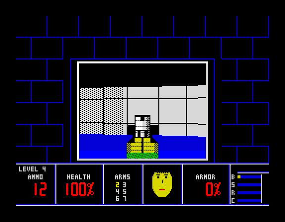
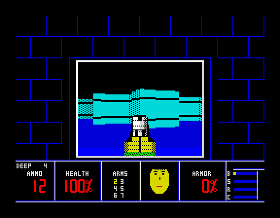
The banners
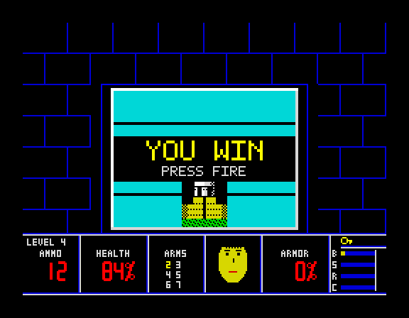

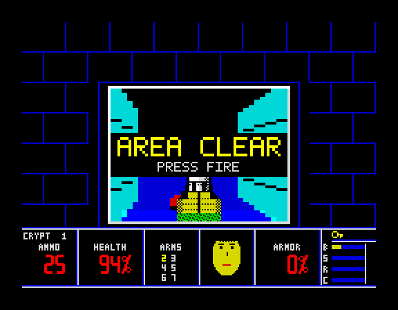
The imps and the level names of Imp Doom III

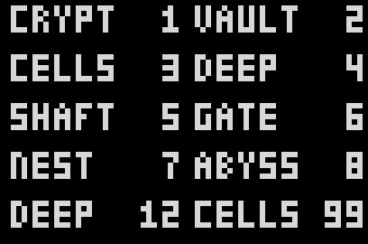
Imp Doom III is final. Its tune, its gun drawing and its save and load were accepted as the finished build of the series. Details of the three games: Imp Doom, Imp Doom II, Imp Doom III. How the 3D view, the colour mode, the generator and the sound work: How it works.
Documentation
The guide above is for playing. The rest is for people who want to see how it is made.
The game’s detailed design and measurement notes live in the author’s working project, not in this repository, so there are no further write-ups to link to yet; How it works is a summary of them.
Credits and thanks
Imp Doom stands on other people’s work. Thank you.
TSRun, the emulator
The game runs in your browser on TSRun, the Timex Sinclair 2068 emulator written by Josef Jelínek (josef-jelinek). This site pins a fork that adds a Kempston mouse and a host file bridge, which Imp Doom III’s save and load use. The emulator itself is Josef’s. Thank you, Josef.
The Timex Sinclair 2068
The computer itself: the TS2068 by Timex Computer Corporation, descended from the Sinclair ZX Spectrum by Sir Clive Sinclair and Sinclair Research. The page loads the stock TS2068 ROMs that come with TSRun (which its notes describe as partly released by Amstrad for non-commercial use and partly abandonware). Timex, Sinclair and ZX Spectrum are trademarks of their owners; this project is not affiliated with Timex, Sinclair, Amstrad, Apple, Fuse or ZEsarUX.
Not affiliated
Imp Doom is an independent fan project, not affiliated with, endorsed by or sponsored by id Software or Bethesda. Its code, levels, art and music are original; nothing is taken from any id Software or Bethesda game or from anyone else’s source code.
The Leap family
Built with the author’s other TS2068 projects (nchiker): the layout, colour variables and theme toggle follow the pages of Leap IDE and Leap Arcade, and the file host (js/fshost.js) is Leap Desktop’s, with the player modelled on its test page.
Built with Claude Code
Much of the code, the tests and the documentation were written with Claude Code (Claude, by Anthropic) working under nchiker’s direction, with nchiker reviewing, choosing and approving the results. The game’s tunes were generated by the project’s own tools.
Full list: CREDITS.md. This repository’s own code and documents are under the MIT License, copyright (c) 2026 Charlie Day; TSRun and the ROMs keep their own terms.
More from the Leap family
Leap Desktop
A GEOS- and Mac-style graphical desktop for the TS2068 in your browser: overlapping windows, menus, a mouse pointer and six programs, from a Calculator to a Paint program.
Leap IDE
Write and run programs for the TS2068 in your browser, in Leap V2 BASIC, Leap-Forth or Leap-C, with an editor, an emulator and a debugger.
Leap Arcade
A game-building studio: a structured BASIC with sprite, tile and music editors, to make action games and export a cartridge.